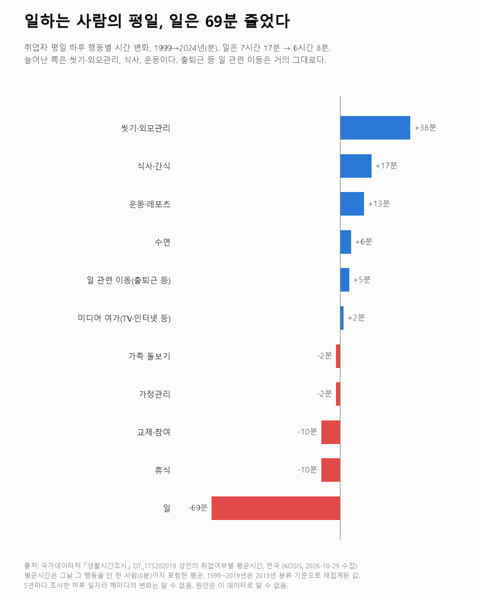
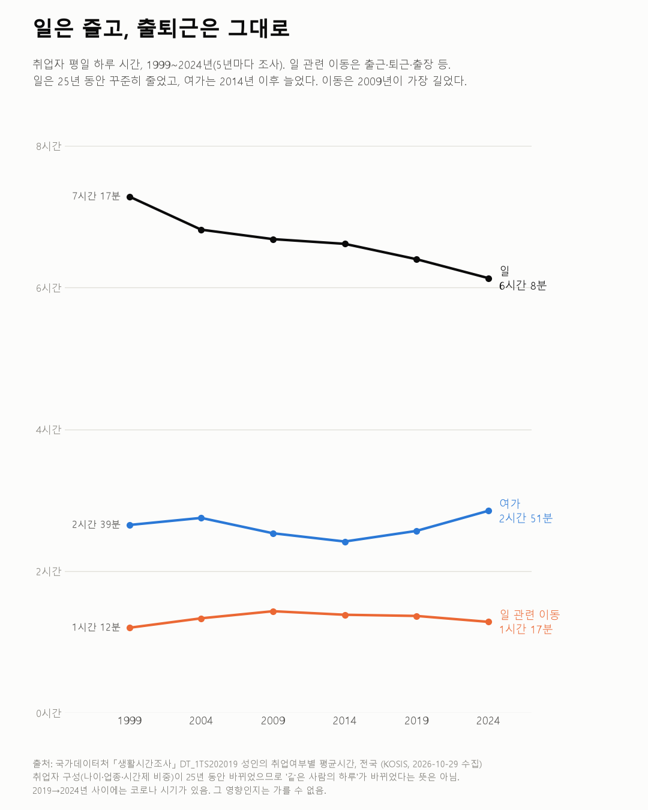

일하는 사람의 평일, 25년 새 일은 69분 줄었다
생활시간조사 1999~2024

질문
일하는 사람(취업자)의 평일 하루는 1999년부터 2024년까지 25년 동안 어떻게 바뀌었나? 일·출퇴근·수면·여가 중 무엇이 늘고 무엇이 줄었나?
사용 데이터와 출처
| 데이터 | 출처 | 쓰임 |
|---|---|---|
| 성인의 취업여부별 평균시간 (KOSIS DT_1TS202019) | 국가데이터처 「생활시간조사」 | 취업자·비취업자의 평일 하루 행동별 평균시간, 1999·2004·2009·2014·2019·2024년 |
- 생활시간조사는 5년마다 응답자가 하루를 10분 단위 일지로 적는 조사다.
- 평균시간은 그날 그 행동을 하지 않은 사람(0분)까지 포함한 평균이다. 그래서 휴가 등으로 그날 일하지 않은 취업자도 "일 0분"으로 들어간다.
- 1999~2019년 값은 2019년 행동분류 기준으로 다시 집계한 값이다(표 주석). 예전에 공표된 숫자와 다를 수 있다.
- 검증: 모든 연도·집단에서 행동 대분류 합이 24시간(1,440분)과 맞는지 확인했다(반올림 차이 6분 이내).
- 교차 확인: 2024년 취업자 요일평균 일 시간 5시간 5분은 국가데이터처 2024 생활시간조사 결과 보도 수치와 같다. 2019년은 이 표가 5시간 20분, 보도는 5시간 19분으로 1분 다르다. 보도는 10세 이상 취업자, 이 표는 성인 취업자라서 생긴 차이로 보인다.
- 수집일: 2026-10-29 (KOSIS 오픈API).
인사이트
1. 취업자의 평일 일하는 시간은 25년 동안 69분 줄었다. 1999년 7시간 17분에서 2024년 6시간 8분이다. 다섯 번의 조사 모두 직전보다 줄었다.
2. 늘어난 쪽은 씻기·외모관리(+38분), 식사·간식(+17분), 운동·레포츠(+13분)다. 수면은 +6분으로 거의 같다. 줄어든 쪽은 일 외에 교제·참여(−10분)와 아무것도 안 하고 쉬기(−10분)다.
3. 늘어난 항목은 일하지 않는 사람도 비슷하게 늘었다. 같은 기간 비취업자도 씻기·외모관리 +36분, 식사·간식 +18분, 운동·레포츠 +20분이다. 이 세 가지는 일하는 사람만의 변화가 아니다.
4. 출퇴근 등 일 관련 이동은 거의 그대로다. 1999년 1시간 12분, 2009년 1시간 26분(가장 김), 2024년 1시간 17분이다. 출근과 퇴근이 따로 나뉜 2019·2024년에는 출근 33분, 퇴근 32~33분이다. 일은 줄었지만 오가는 시간은 줄지 않았다.
5. 최근 5년(2019→2024)은 일 −16분, 여가 +17분이다. 여가 중 늘어난 것은 대부분 TV·인터넷 등 미디어 여가(+15분)다. 비취업자도 미디어 여가가 +21분 늘었다.

한계
이 데이터로 말할 수 없는 것
- 같은 사람을 따라간 것이 아니다. 25년 사이 취업자의 나이, 업종, 시간제 비중이 바뀌었다. "한 사람의 하루가 이렇게 바뀌었다"가 아니라 "그해 취업자 평균이 이랬다"이다.
- 5년에 한 번, 하루 일지다. 해마다의 변화나 계절 차이는 알 수 없다. 조사 시기의 하루가 평소와 다를 수 있다.
- 2019→2024년 사이에는 코로나 시기가 있다. 최근 5년 변화가 그 영향인지는 이 데이터로 가를 수 없다.
- '일' 시간은 그날 일하지 않은 취업자(휴가 등)까지 포함한 평균이다. 실제로 일한 날의 근무시간과는 다르다. 근로시간 통계(사업체 조사)와 바로 비교하면 안 된다.
- '성인'의 정확한 연령 범위는 확인하지 못했다. 표 이름만 근거로 썼다. 통계설명자료에서 확인이 필요하다.
- 원인은 말하지 않는다. 주 52시간제, 주 5일제, 재택근무, 스마트폰 등 이유는 이 데이터로 알 수 없다.
전제 기록
데이터를 보기 전에 적어둔 것, 그리고 보고 나서 바꾼 것
- 전제 기록(premises)(데이터를 받기 전에 작성)를 따랐다.
- 받은 뒤 바뀐 점: 이 표는 기간 구분이 '연(Y)'이 아니라 '다년(F)'이어서, 공통 받기 함수(
kosis_lib.fetch)에 기간 구분 인자를 추가했다. 결과에는 영향이 없다. - 비취업자 비교(인사이트 3)는 전제에 적어 둔 비교군 확인 그대로다.